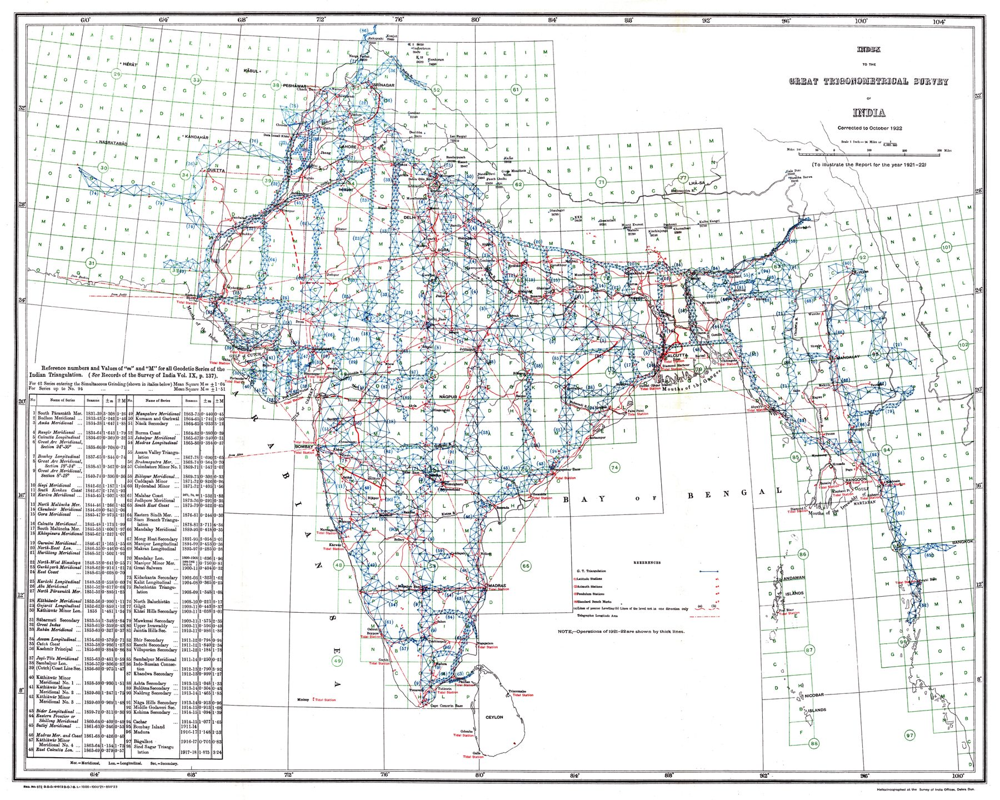

An institutional index
The scan identifies the source as the Report of the Survey of India for 1921–22. The map is an administrative diagram embedded in the Survey’s own annual reporting.
The network behind the map
The one-degree grid and survey symbols organise the country by the operations through which positions were established. Triangulation chains and other geodetic work appear as an infrastructure of measurement laid across the subcontinent.
From Lambton to institution
Placed at the end of the Survey Turn, the index functions as a retrospective epilogue rather than the next chronological step after the 1831 Walker map. The experimental and hazardous early triangulations have become, by 1922, a mature bureaucratic system capable of diagramming its own coverage.
The gaze
Nothing on this sheet was meant for the public; it was drawn so that the Survey could see itself. The lattice it records underlies every other modern map in the collection, and its authors evidently thought the coverage worth displaying as an achievement in its own right – the work begun under Lambton now reckoned by the one-degree square, with no surveyor’s name attached.
In the Deccan timeline
Lambton and the Great Trigonometrical Survey (10 April 1802)